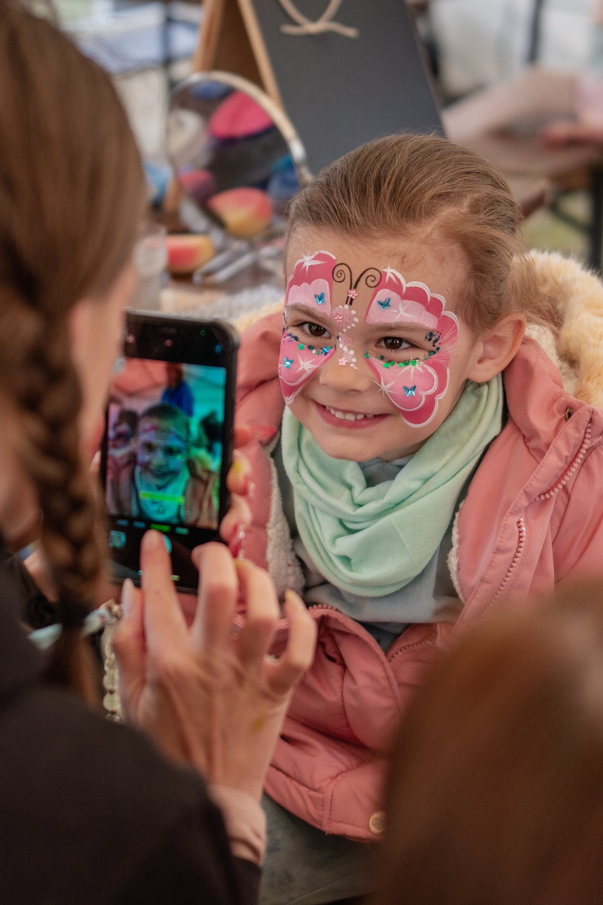
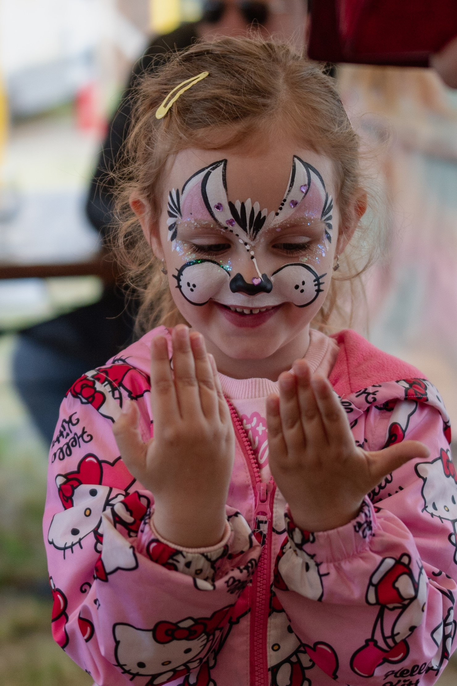
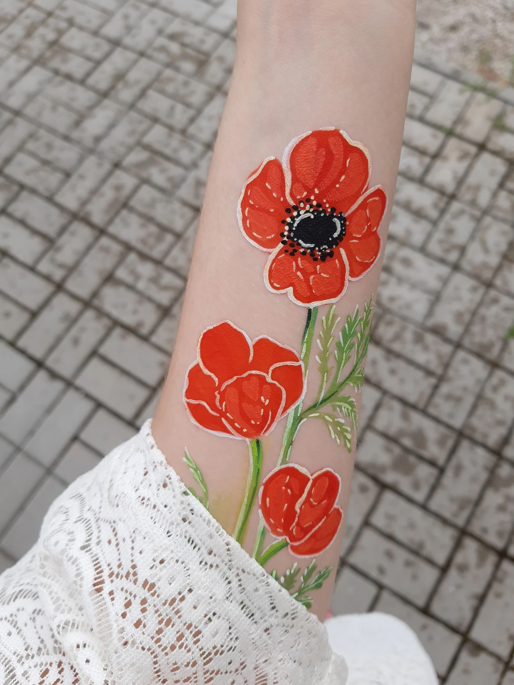

🎨 Organizujete oslavu a pozvali ste maľovanie na tvár?
Tu je pár tipov, čo pripraviť! 🎭
Pravdepodobne si takú situáciu viete predstaviť a približne viete, ako podobné atrakcie vyzerajú.
Ak však maliarka alebo maliar nemajú vlastný vybavený stánok alebo je prenášanie vybavenia náročné,
myslite na tieto detaily:
- ✅ Stôl a dve stoličky – Počet stoličiek závisí od počtu maliarov. Ak nechcete, aby sa stôl znečistil, pripravte umývateľný obrus. 🖌️
- ☀️ Ochrana pred slnkom – Ak oslava prebieha v horúcom lete, zabezpečte slnečník alebo stan. Sedenie celý deň na priamom slnku je náročné a potenie môže spôsobiť, že obrázky sa rýchlo rozmazávajú. 🌞💦
- 🚰 Prístup k čistej vode – Ideálne je mať vodu hneď po ruke, aby maliari nemuseli odbiehať. TIP: Pripravte dve vedrá – jedno prázdne na špinavú vodu a jedno plné čistej. A je to! 💧🪣
💡 Zlepšováky? Sem s nimi!
Stôl a stoličky vo výške pracovného stola – Ak je možnosť, použite barové stoličky alebo stoličky pre vizážistov,
aby maliari mohli maľovať postojačky a deti pohodlne sedeli. 💺✨
S týmito tipmi bude maľovanie na tvár pohodlné pre všetkých a oslavu si užijú nielen deti, ale aj maliari!🥳🎨
Ďakujem za spoluprácu. 😘

Ako si vybrať vzor?
Keďže je priam vysoko nepravdepodobné, že sa mi niekedy ozvete prostredníctvom mojich sietí alebo stránky
a v podstate tvoríte malý okruh priateľov, ktorí sledujú moje aktivity nazvem vás dnes familiárne - milá mamka a milý ocko.
(Prosím napíšte, že tento bol dobrý!)
Na obrázku je kvapka Anastázia, ktorú som nedávno vymyslela. Aby som vám nový vzor mohla namaľovať,
musíte vedieť, že existuje. Kuk rýmovačka nižšie.
Pomôže nám vysvetliť to krátky rým,
že ako je to s maľovaním.
Priatelia, dobre viete,
že u mňa šablónu nenájdete.
Vzor si treba vydumať,
alebo môj insta preskúmať. :)

Ako prebieha rezervácia dátumov?
Pripravila som si krátky článok, v ktorom krok za krokom vysvetlím ako prebieha komunikácia a na čo je dôležité myslieť:
Ahoj, napadlo mi vytvoriť niekoľko bodov, ktoré sa týkajú blížiacej sa jarnej a letnej sezóny.
- pozri si moje portfólio na webe a sociálnych sieťach
- zvoľ si pre teba najvhodnejší spôsob komunikácie (e-mail, facebook, instagram, WhatsApp, zavolaj mi), dátum, miesto a čas sú informácie, ktoré by prvá správa mala obsahovať
- premysli si poporiadku: počet detí, ktoré je potrebné zabaviť; zohľadni vek detí; na koľko hodín budeš potrebovať program; ako chceš namixovať program
- počkaj, ja sa určite ozvem (ak sa mi snažíš dovolať, ale nemôžeš ma zastihnúť pošli mi textovú správu)
- ozvala som sa! od tohto bodu Ťa povediem, skúsime skĺbiť tvoju predstavu s mojimi možnosťami